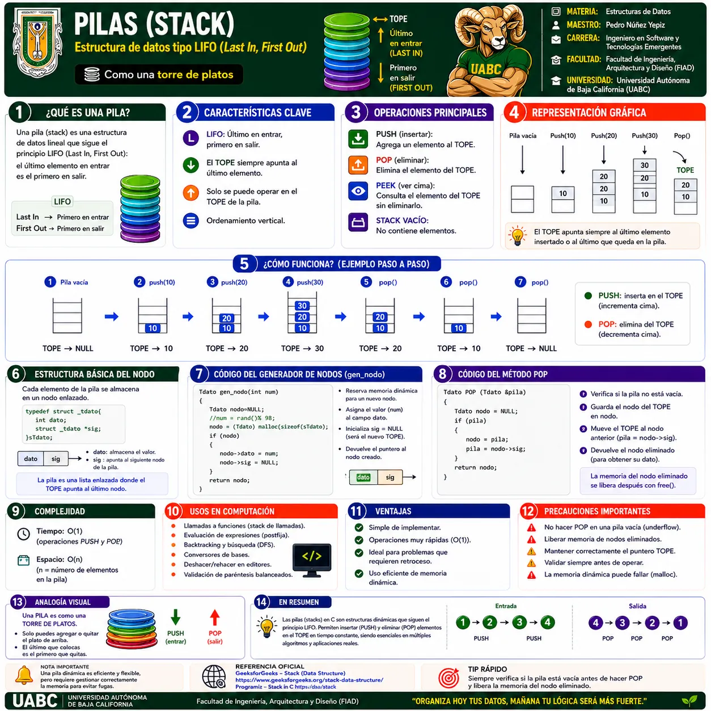
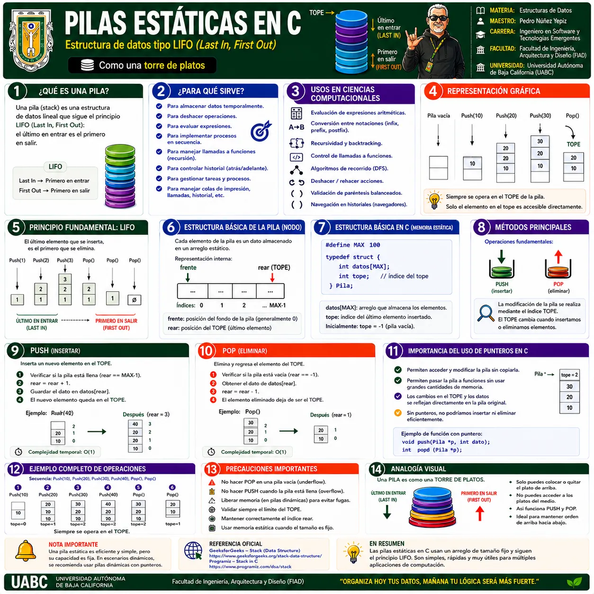
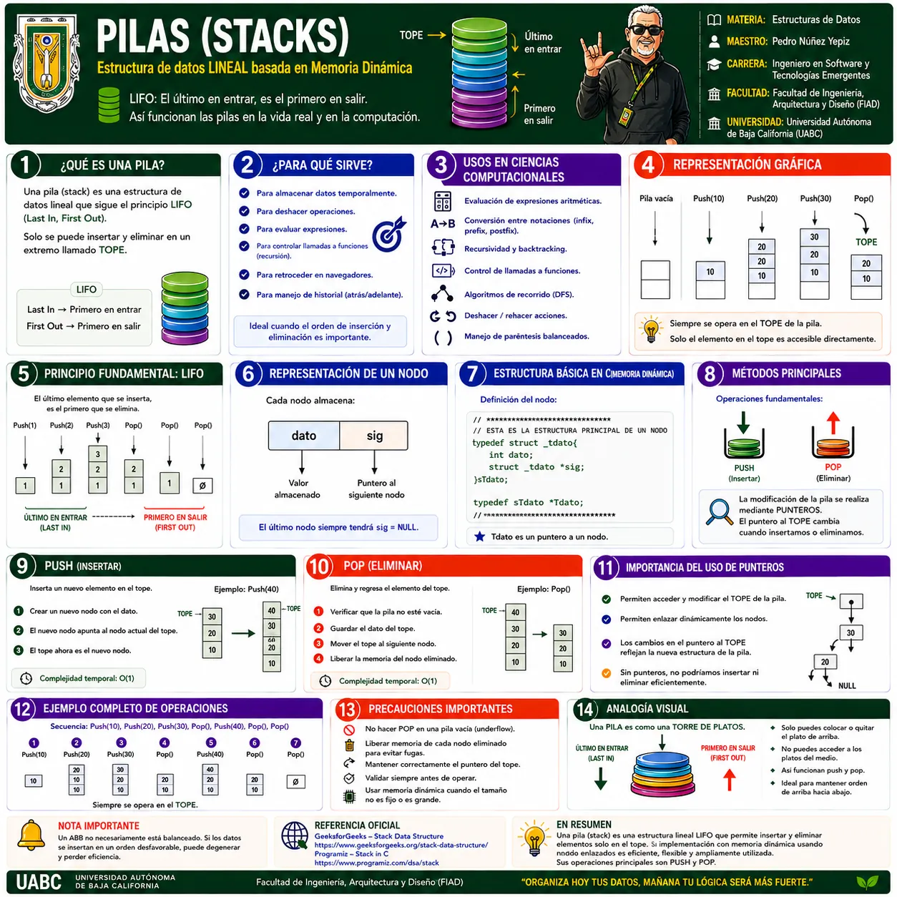
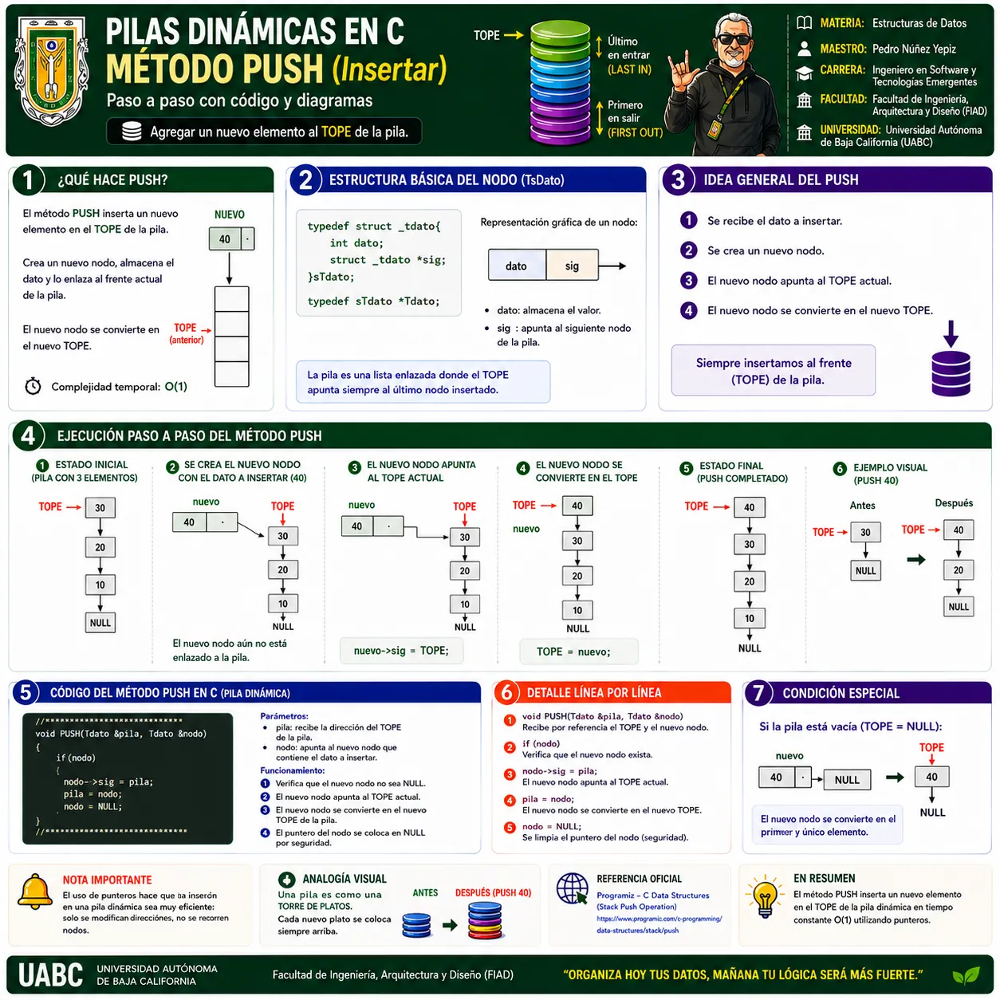
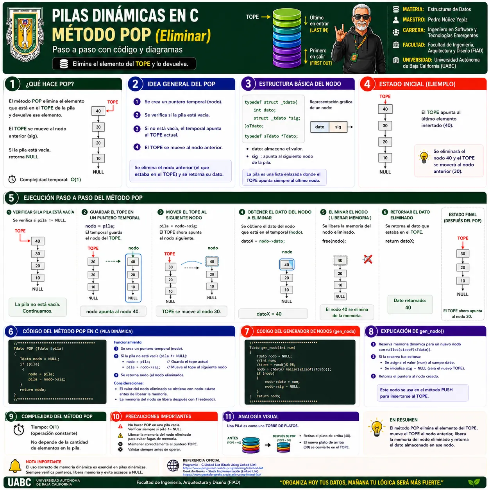

🖼️ Galería visual
Selecciona una infografía para verla a pantalla completa. Puedes usar Zoom +/−, anterior/siguiente y Esc para cerrar.

1 · Pilas (Stack) · Conceptos fundamentales
Principio LIFO, representación, operaciones y aplicaciones.

2 · Pilas Estáticas en C
Implementación mediante arreglo y control del TOPE.

3 · Pilas Dinámicas en C
Nodos enlazados y memoria dinámica.

4 · Método PUSH
Inserción en el TOPE.

5 · Método POP
Eliminación del TOPE y liberación de memoria.
💡
RECOMENDACIÓN
Comienza por la infografía general y después revisa las variantes y operaciones específicas.
Comienza por la infografía general y después revisa las variantes y operaciones específicas.